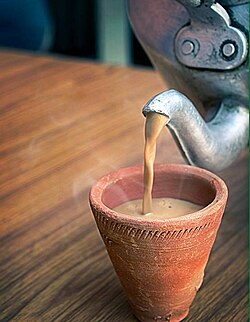

The word for tea in most Indian languages is"chai" derived from the Chinese word cha. Tea however became a popular beverage introduced to India by the British. Tea plants have grown wild in the Assam region since antiquity, but historically, Indians viewed tea as an herbal medicine rather than as a recreational beverage.
In the 1830s, the British East India Company became concerned about the Chinese monopoly on tea, which constituted most of its trade and supported the enormous consumption of tea in Great Britain of around 1 pound (0.45 kg) per person per year. British colonists had recently noticed the existence of the Assamese tea plants and began to cultivate tea plantations locally. In 1870, over 90% of the tea consumed in Great Britain was still of Chinese origin, but by 1900, this had dropped to 10%, largely replaced by tea grown in India (50%) and Ceylon (33%).